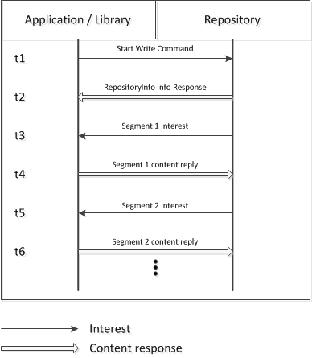
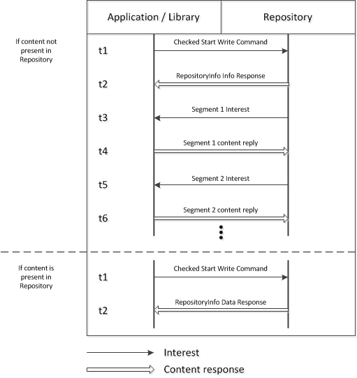
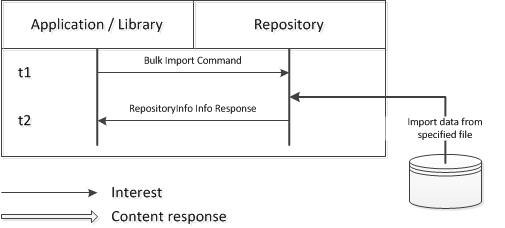
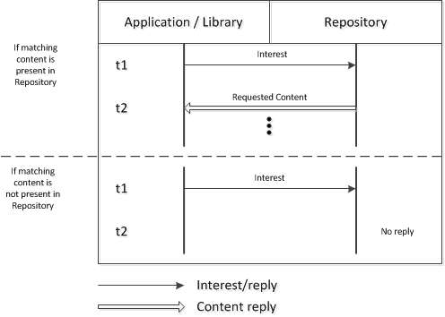

Introduction
In CCNx, a Repository supports the network by preserving content as instructed and responding to Interests requesting content that it holds. These services are available to CCN components, including CCN-enabled customer applications.
A Repository uses the local file system for persistent storage of CCN Content Objects. A disk-resident index facilitates rapid start-up and limits the memory footprint.
All interactions with the Repository are conducted through ccnd. The primary method of instructing a Repository to obtain and preserve content is through the CCNx Repository Protocol. A client wishing to store content (the writer) expresses a specially constructed Interest, in the form of a "request for Interests" that triggers the Repository to start retrieving content with a given name prefix that the writer provides. (All of this is hidden from the typical application by one of the conventional I/O APIs.) Retrieval of content is performed with standard CCNx Protocol features.
The CCNx Name Enumeration Protocol provides means for a CCN component to obtain a list of names under a specified prefix, much like a directory listing. This protocol is described in CCNx Name Enumeration Protocol.
The CCNx Synchronization Protocol allows CCN components to define collections of content that reside in Repositories in multiple nodes and are to be kept in sync. The Repository utilizes embedded Synchronization facilities to synchronize copies of the collections automatically. The process for defining these collections is described in CCNx Synchronization Protocols.
A Repository has a Policy that specifies the namespaces (name prefixes) for which it accepts and holds content. An initial Policy may be specified by configuration information; after that, Policies may be updated using the CCNx Repository Protocol like any other content. The process for defining policies is described in CCNx Repository Policy Handling.
The Repository may be initiated with the ccnr command. The command and Repository configuration options are described in the CCNR(1) man page.
CCNx Repository Protocol
The Repository Protocol provides a method for an entity such as an application to store Content Objects. A content storage request is represented as a CCNx Interest with a command marker as a component of the name indicating the desired action. A response is represented as a Content y response data.
Three commands are available in the CCNx Repository Protocol: Start Write, Checked Start Write, and Bulk Import.
Start Write
The Start Write (%C1.R.sw) command requests that the Repository retrieve and store content. It is constructed as an Interest with a name that is, when expressed as a URI, of the form
ccnx:(/<component>)*/%C1.R.sw/<nonce>
<component>
The components are required, and represent the name prefix of the content to be stored. See CCNx Name Specification.
<nonce>
<nonce> is required, and is as described in the Nonce (Namespace N) section of CCNx Basic Name Conventions.
Response
The Repository responds to a Start Write with a Content Object containing a RepositoryInfo object of type "INFO" as described in CCNx RepositoryInfo Object. (The message acknowledges that the request was accepted and gives details about the Repository that accepted the request. In this case, no response data is returned.) The Repository then begins fetching content from the writer using normal CCNx protocol messages. Retrieval is asynchronous.
The variable elements of the returned RepositoryInfo object are as follows:
-
Type is "INFO".
-
RepositoryVersion is "2.0".
-
GlobalPrefixName is the Global Prefix (e.g., "/parc.com/csl/ccn/Repos"), which is the name under which the Repository stores its own objects.
-
LocalName is "Repository".
The InfoString element is not used.
The protocol is illustrated below.

Note that implementations of the Repository are likely to use pipelining to fetch the content; the diagram shows only the simplest possible sequence.
Checked Start Write
The Checked Start Write (%C1.R.sw-c) command is similar to Start Write, but the Repository first checks to see whether it already holds the content and does not retrieve and store it if it is already present. The Repository responds in either case. The command is constructed as an Interest with a name that is, when expressed as a URI, of the form
ccnx:(/<component>)*/%C1.R.sw-c/<nonce>/<segment>/<digest>
<component>
The components are required, and represent the name prefix of the content to be stored. See CCNx Name Specification.
<nonce>
<nonce> is required, and is as described in the Nonce (Namespace N) section of CCNx Basic Name Conventions.
<segment>
<segment> is required, and is the sequence component of the first segment to be stored. For consecutive numbering, this is typically %00.
<digest>
<digest> is required, and is the SHA-256 digest of the entire ccnb-encoded Content Object. (This is the implicit digest component of the name of any Content Object. The combination of <segment> and <digest> precisely identify the first segment of the content to be stored.)
Response
If the object is not present, the Repository responds with a Content Object containing a RepositoryInfo object of type "INFO" as described in CCNx RepositoryInfo Object, the same as for Start Write. The Repository then begins fetching content from the writer using normal CCNx protocol messages. Retrieval is asynchronous.
If the object is not present, variable elements of the returned RepositoryInfo object are as follows:
-
Type is "INFO".
-
RepositoryVersion is "2.0".
-
GlobalPrefixName is the Global Prefix (e.g., "/parc.com/csl/ccn/Repos"), which is the name under which the Repository stores its own objects.
-
LocalName is "Repository".
The InfoString element is not used.
If the object is present, the Repository responds with a Content Object containing a RepositoryInfo object of type "DATA". In this case, the data returned (in the Name element) is the complete name of the target of the Checked Start Write, and the Repository does not fetch any data from the writer.
If the object is present, variable elements of the returned RepositoryInfo object are as follows:
-
Type is "DATA".
-
RepositoryVersion is "2.0".
-
GlobalPrefixName is the Global Prefix (e.g., "/parc.com/csl/ccn/Repos").
-
LocalName is "Repository".
-
Name is the complete name (including the digest) of the target of the Checked Start Write.
The InfoString element is not used.
The protocol is illustrated below.

Note that implementations of the Repository are likely to use pipelining to fetch the content; the diagram shows only the simplest possible sequence.
Bulk Import
The Bulk Import (%C1.R.af) command (also sometimes known as "add file") requests that the Repository merge Content Objects from a local file into the Repository store. This command is provided for backward compatibility, and its use is discouraged.
Prior to issuing a Bulk Import command, a file that consists of a sequence of ccnb encoded Content Objects (such as would have been created by a Repository) must be placed in the $CCNR_DIRECTORY/import/ directory.
The Bulk Import command is constructed as an Interest with a single component name that is, when expressed as a URI, of the form
ccnx:/%C1.R.af~<filename>
<filename>
<filename> is the ASCII name of a file that must exist within the import directory of the Repository to which the content is being imported. It must be a simple name with no /'s.
If the command is accepted, the Repository attempts to open and parse the specified file. If there are no errors, Content Objects in the file that are not already in the Repository are imported, Content Objects that are already in the Repository are ignored, and the file is deleted.
Response
The Repository responds to a Bulk Import with a Content Object containing a RepositoryInfo object of type "INFO" as described in CCNx RepositoryInfo Object.
The variable elements of the returned RepositoryInfo object are as follows:
-
Type is "INFO".
-
RepositoryVersion is "2.0".
-
GlobalPrefixName is the Global Prefix (e.g., "/parc.com/csl/ccn/Repos"), which is the name under which the Repository stores its own objects.
-
LocalName is "Repository".
-
InfoString reflects the success or failure of the request. If the request is successful, InfoString contains the string "OK". If an error is detected, InfoString contains a diagnostic message.
The protocol is illustrated below.

Fetching Repository content
A standard Interest is used to fetch content from the Repository. The Interest specifies a prefix; if it has matching content, the Repository returns it from its backing store. The prefix is the only required component of the Interest, although other components may be used to narrow the selection. See CCNx Interest Message for details.
If a matching object is present, the Repository responds with the requested Content Object.
If a matching object is not present, the Repository does not respond.
The protocol is illustrated below.
